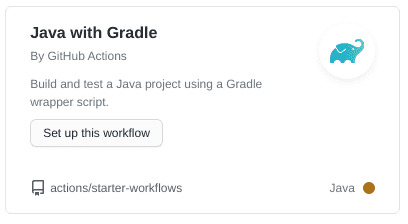
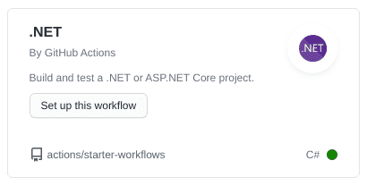

Calcolo numerico per la generazione di immagini fotorealistiche
Maurizio Tomasi maurizio.tomasi@unimi.it
Nel momento in cui si gestiscono pull request, è necessario essere sicuri che la modifica non peggiori il codice.
Un requisito basilare è che tutti i test continuino a passare una volta che viene incorporato il pull request.
GitHub consente di verificare automaticamente questo requisito, tramite i Continuous Integration builds (che GitHub chiama GitHub actions).
È un termine che indica un metodo di lavoro in cui miglioramenti
e modifiche al codice vengono incorporate il prima possibile nel branch
master.
Perché possano essere incorporati, occorre essere certi della loro qualità!
Un CI build consiste nel creare una macchina virtuale su cui si installa un sistema operativo «pulito» e su cui si installa il codice, lo si compila e si eseguono i test.
Al termine dell’esecuzione dei test, la macchina virtuale viene cancellata; se si esegue di nuovo il CI build, si ricomincia da capo.
Installano il codice su una macchina virtuale: più difficile combinare guai.
La macchina virtuale viene creata sempre da zero: più facile
scoprire quali sono le dipendenze del codice. (Esempio: è stata
installato il compilatore C++? È stata installata la libreria
libgd?)
Si possono creare macchine virtuali che installano diversi sistemi operativi (Linux, Windows, Mac OS X, FreeBSD, etc.): il codice viene verificato su ciascuna di esse.
I CI builds possono venire eseguiti automaticamente da GitHub ogni volta che si apre un pull request, ogni volta che si fa un commit, etc.
Un CI build può essere creato ed eseguito in GitHub tramite GitHub Actions, un servizio che include una serie di possibilità che vanno oltre i semplici CI build.
Per attivare un CI build è sufficiente create una directory
nascosta .github/workflows nel proprio repository, che
contenga un file di testo in formato YAML, che contenga queste
informazioni:
GitHub Actions ha un «marketplace» che consente di configurare automaticamente con pochi click del mouse un CI build in funzione del linguaggio che usate.
Sono disponibili azioni pre-configurate per molti linguaggi ed ambienti di sviluppo.
Non è drammatico se non trovate un’azione che fa al caso vostro: è abbastanza semplice creare nuove azioni su misura, una volta che capite come fare a descriverle.
Aggiungete un workflow al vostro repository GitHub.
Ci sono molti template disponibili in GitHub: scegliete il più appropriato.
Il workflow deve eseguire le seguenti azioni:
Modificate un test in modo che fallisca e verificate che quando fate il commit ciò vi venga segnalato. (Poi rimettete a posto il test).
Per D, potete usare setup-dlang
Per Nim, esiste Setup Nim Environment
Chi usa Rust ha già configurato una action, quindi tutto ok!
Sia che usiate Java sia che usiate Kotlin, selezionate «Java with Gradle»:

Se usate Kotlin, Gradle scaricherà automaticamente quanto serve per supportarlo.
Il processo proverà a compilare il codice e a eseguire tutti i test nel repository
Ricordatevi di aggiungere al commit i file in
gradle/wrapper/
Se in Kotlin avete problemi a causa della versione di Gradle,
rigenerate gradlew da linea di comando così:
(Tenete presente che Gradle supporta Kotlin solo a partire dalla versione 5.3).
Aggiungete una Action al repository GitHub, una volta che avete
fatto il commit ed eseguito git push.
Il modello è «.NET» (evitate il modello «.NET desktop», a noi serve quello per i programmi che funzionano da linea di comando):
